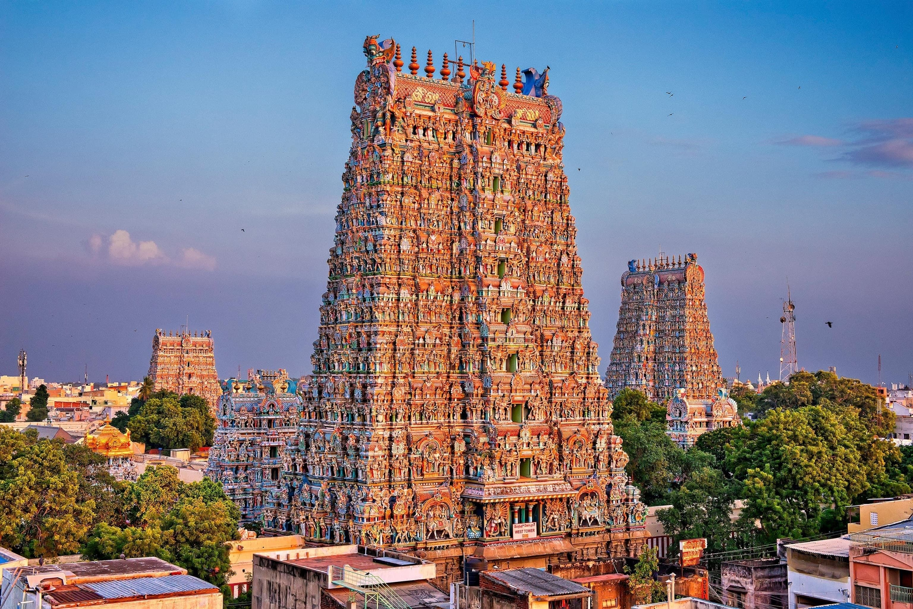

The Meenakshi Amma Temple, located in Madurai, Tamil Nadu, is a historic Hindu temple dedicated to Goddess Meenakshi and Lord Sundareshwarar. It is a symbol of Tamil culture, spirituality, and architectural excellence.
The temple has ancient origins and is mentioned in Tamil literature. Over centuries, it was expanded by various dynasties, including the Pandyas and Nayaks, who added the stunning gopurams and intricate sculptures seen today.
The temple is open daily from 5:00 AM to 12:30 PM and 4:00 PM to 9:30 PM.
Email: temple@example.com
Phone: +91-1234567890
Address: Madurai, Tamil Nadu, India